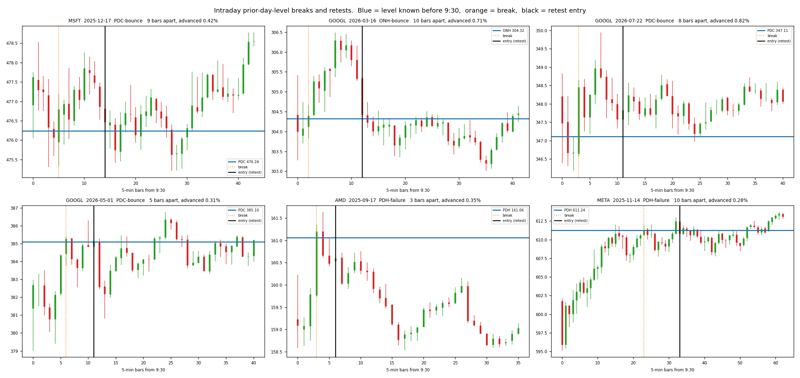
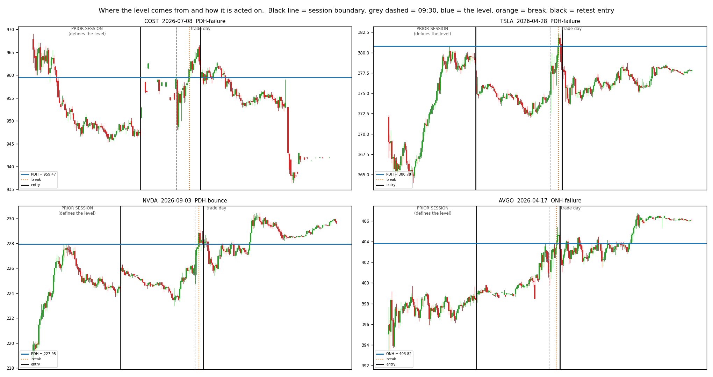
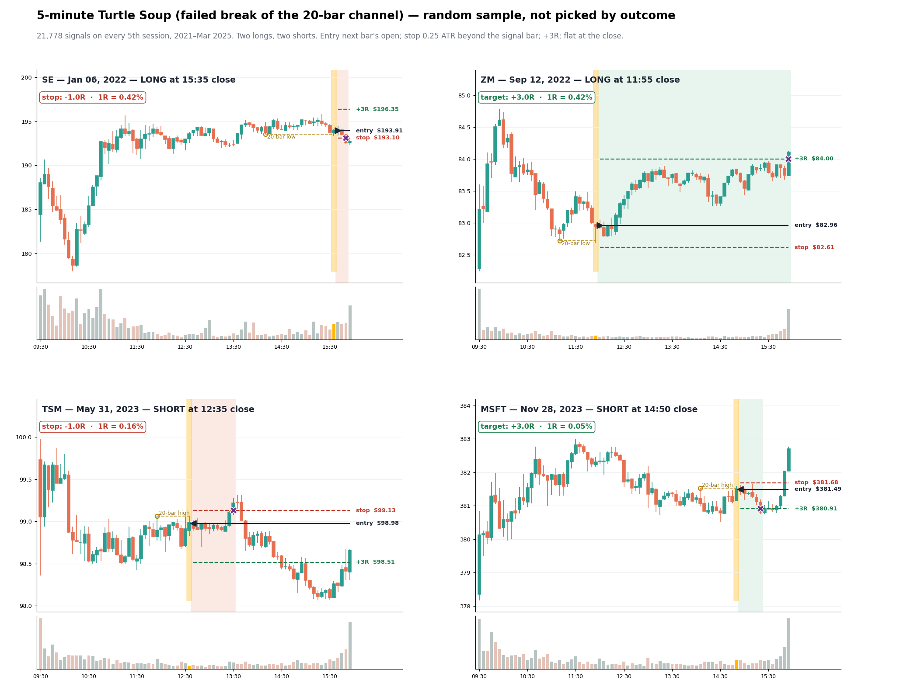
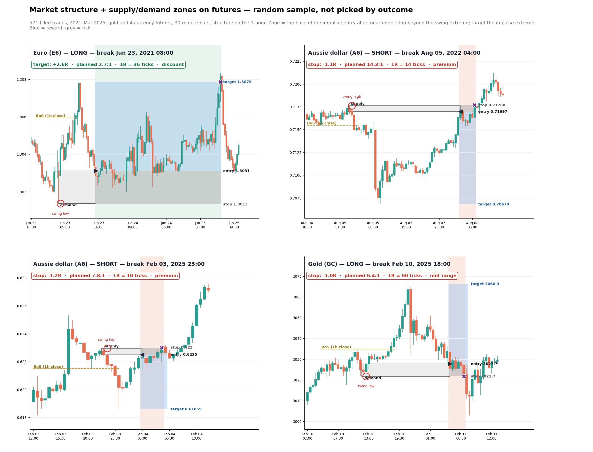

Each chart is a drawn, idealized example of a setup as it's taught, so you can see exactly what the code looks for. Under each one is the rule we coded and what the backtest found. Real examples from the data are at the bottom.
up candledown candlelevel / zonethe setup's triggerentry
The yardstick
Every stock setup was compared with this rule. It uses the same entry bar, stop and target as the setup, but ignores the chart pattern.
Opening-session claims (ICT and similar)
Claims that the first hour follows a script. Tested on the 100 most-traded US stocks each day, 1,435 days of 5-minute bars.
Entry setups on stocks
Each one is compared with a random entry in the same stock, same day, same direction, same risk, and with the momentum yardstick. Fills are at the next bar's open.
Futures and FX strategies from posts and courses
Later tests of specific systems people posted. Each had its rules written down before the holdout was opened.
Real detections from the data
These are renders the repo produced from actual 5-minute and 30-minute bars. The samples were picked at random, not by outcome. Looking at them caught mistakes that the statistics missed.

Break and retest of prior-day levels. Blue is the level known before 9:30, orange dotted is the break, black is the retest entry. An early version of this detector called the bar right after the break a "retest" 73% of the time. These pictures are how that was found. figures/intraday_setups.png

Where the level comes from. The prior session (left of the black line) sets the high or low. The trade day breaks it after 9:30 (grey dashed) and the entry comes on the retest. figures/twoday_context.png

Turtle Soup, a failed break of the 20-bar channel. Price pokes under the 20-bar low and closes back above it, so you buy. The stop is 0.25 ATR past the signal bar and the target is 3R. This was explored on the development period only and never taken to a registered test. explore5m/figures/sample_soup.png

Supply and demand zones on futures. Gold and four currency futures, 30-minute bars. The zone is the base of the impulse, and a 1-hour close past the last swing is the break of structure. Blue shading is the reward and grey is the risk. explore_fut/figures/sample_zones.png